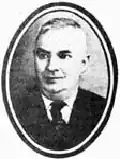

Григорій ГРИГОР'ЄВ
Григор'єв Григорій Прокопович народився 21 серпня 1898 року в Києві у багатодітній робітничій сім'ї. У п'ятнадцятирічному віці через матеріальну скруту найнявся переписувачем у казенну палату, а затим влаштувався рахівником в управління Південно-Західної залізниці.
Аби прогодувати велику сім'ю, батько майбутнього письменника підробляв гардеробником в оперному театрі, в якому мати працювала прибиральницею. Це сприяло тому, що Григор'єв у ранньому дитинстві перейнявся особливою шанобою до сценічного дійства. І коли став на самостійний шлях життя, після роботи відвідував Музично-драматичні курси імені Лисенка, якими керувала дочка Михайла Старицького Марія. Саме завдяки її клопотанням його прийняли статистом-хористом у театр Миколи Садовського. Згодом був артистом у театрі української драми під керівництвом Панаса Саксаганського, водночас працюючи за сумісництвом касиром у Держбанку. Голодного 1921 року перейшов на роботу в профспілку цукровиків — керував самодіяльністю на цукроварнях Смілянського повіту. На цей час припадає початок його літературної діяльності. Після закінчення Київського кіноінституту (1934) регулярно друкував статті і рецензії з питань літератури, музики, театру, образотворчого мистецтва в журналах "Радянське мистецтво", "Театр", "Радянське кіно", "Искусство", "Советский театр". З 1934 року працював асистентом режисера на Київській кіностудії художніх фільмів, але 1937 року зненацька був звільнений "за скороченням штатів". З великими труднощами влаштувався на педагогічну роботу. Проте ненадовго. 14 грудня 1937 року був заарештований і невдовзі без пред'явлення звинувачення, без суду відправлений в Колимські концтабори. "Щасливий випадок зіткнув мене через рік із моїм київським слідчим, — згадував через багато літ Григорій Прокопович. — І він, тепер в'язень, змушений був визнати, що мене репресовано за брехливими наклепами. Про це дав свідчення на письмі. Начальник табору надіслав це свідчення до Москви, і наприкінці 1941 року надійшла відповідь: мою справу переглянуть лише після війни... У вересні 1946 року мене звільнили. Офіційно був реабілітований у березні 1958 року". Опинившись на волі. тривалий час учителював по селах Київщини. 1959 року нарешті пощастило перебратися на постійне мешкання до рідного міста Лише вийшовши на пенсію, Григор'єв зміг цілковито віддатися творчій роботі. В останні роки життя він написав публіцистично-документальні книжки "У старому Києві" (1961), "Україна танцює" (1964), "Що було, те бачив" (1966), "Цікаві бувальщини" (1966), "Чарка меду" (1969). Помер 29 серпня 1971 року. Олекса Мусієнко ЛУ 29 (4438) 19.07.1991